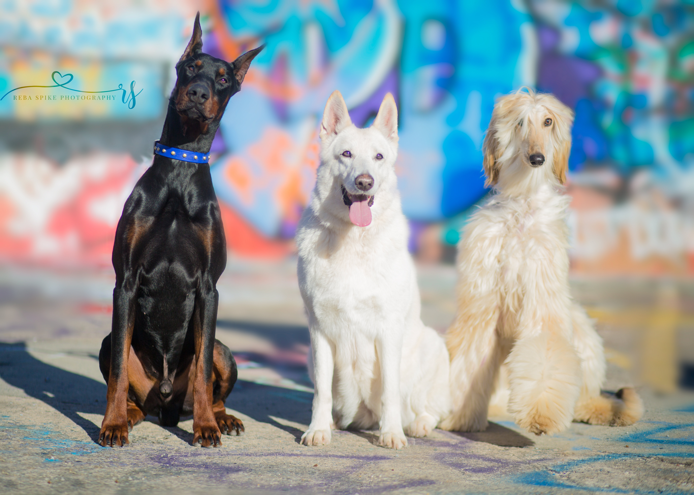
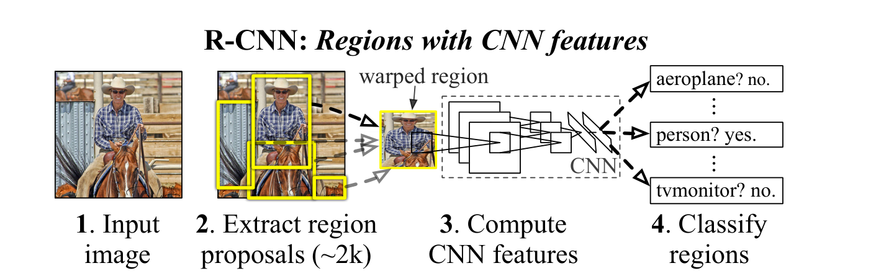
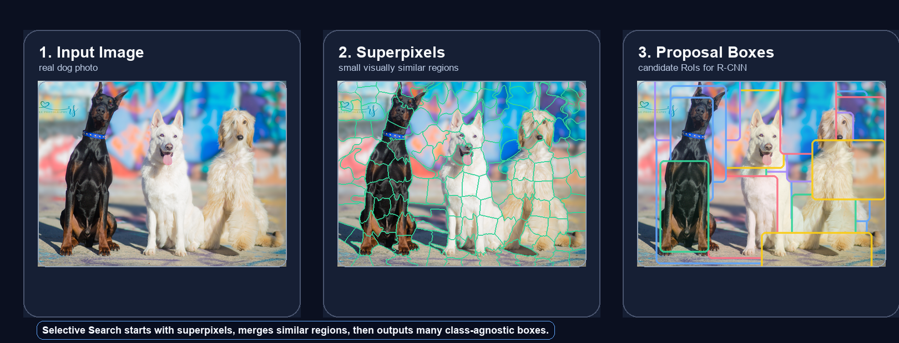
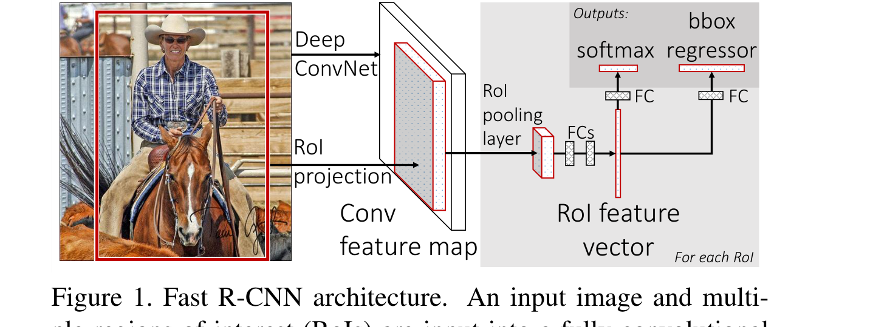
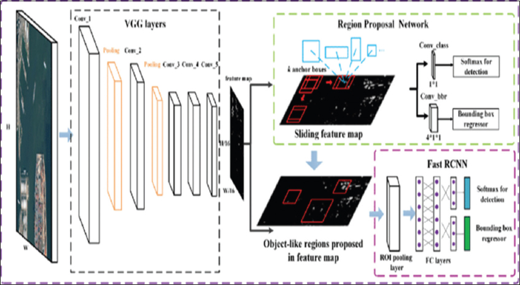
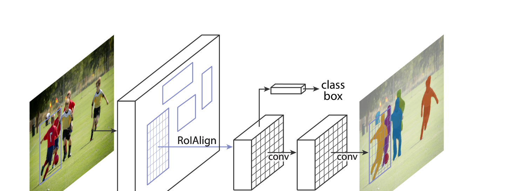

From hand-designed region proposals to shared feature maps, learned anchors, RoIAlign, and instance masks.
Each model keeps more work inside the network and shares more computation. The story is: proposals become faster, features become shared, and masks need better alignment.

Using one image makes the pipeline easier to follow.
The image stays the same; what changes is how each model proposes, extracts, and predicts from regions.
R-CNN brought CNN features into object detection by classifying region proposals instead of sliding a classifier over the whole image.

Key cost: if N = 2000, the CNN repeats similar convolution work around the same dogs thousands of times.
R-CNN asks, “Is this crop a dog?” again and again. It is accurate, but it forgets that many crops overlap.

Selective Search gives R-CNN and Fast R-CNN many candidate RoIs before the CNN makes class predictions.
Color: do regions have similar color histograms?
Texture: do local patterns look similar?
Size: prefer merging small regions early.
Fill: does the combined box tightly fit both regions?
Different color spaces and merge strategies are used to increase proposal diversity.
Selective Search saves boxes throughout the merge tree, so it can propose dog parts, one dog, or a group of dogs.
Fast R-CNN computes convolutional features once for the entire image, then extracts proposal features from the shared feature map.

The proposal begins in original image coordinates. After the backbone CNN, coordinates are scaled down by the feature stride.
Example:
image RoI = (80, 48, 240, 208)
stride = 16
feature-map RoI = (5, 3, 15, 13)
The CNN feature map is a compressed version of the image. RoI Pooling chooses the matching rectangle on that compressed map.
Every proposal can have a different shape, but the fully connected detection head needs a fixed-size tensor.
RoI Pooling asks: inside this region, what is the strongest activation in each bin?
Real Fast R-CNN commonly uses 7x7 bins; 2x2 is shown for teaching.
The selected RoI covers a 3x3 feature-map region. We divide it into 2x2 bins and take the max activation per bin.
The output remembers the strongest evidence in each spatial bin, while forcing every RoI into the same shape.
RoI Pooling quantizes both the RoI boundaries and the bin boundaries to integer feature-map cells.
Rounding is tiny numerically, but masks are pixel-level outputs, so tiny spatial errors become visible.
RoIAlign does not snap the RoI to integer cells. It samples points inside each bin and computes values with bilinear interpolation.
RoIAlign asks for the feature value at an exact location, even if that location lands between grid cells.
If a sample point falls between four feature cells, RoIAlign blends their values according to distance.
Weighted sum:
10 × 0.0625 + 14 × 0.1875 + 18 × 0.1875 + 22 × 0.5625 = 19.0
Faster R-CNN replaces external Selective Search with a Region Proposal Network that shares the same CNN feature map.

At every feature-map location, the RPN predicts proposals using a small sliding network.
An anchor is a reference box. It is not the final detection.
Anchor boxes are default guesses. The RPN learns which guesses are object-like and how to adjust them.
During training, anchors are matched to ground-truth boxes by IoU.
Typical Faster R-CNN-style thresholds: positive >= 0.7, negative <= 0.3. Exact values vary by implementation.
The RPN may produce many overlapping boxes around the same dog. NMS keeps the highest-scoring box and removes highly overlapping duplicates.
Mask R-CNN extends Faster R-CNN with a parallel mask branch and replaces RoI Pooling with RoIAlign.

For each RoI, Mask R-CNN predicts three outputs.
| Method | Coordinates | Feature value | Aggregation | Best fit |
|---|---|---|---|---|
| RoI Pooling | Rounds RoI and bin boundaries | Uses existing integer feature cells | Max pooling per bin | Good for detection, can misalign masks |
| RoIAlign | Keeps floating-point RoI geometry | Bilinear interpolation from nearby cells | Average or max over sample points | Better for instance masks |
Detection tolerance: a bounding box can still be useful if the feature is slightly shifted.
Mask sensitivity: pixel labels need the feature grid to stay aligned with the original object boundary.
| Model | Proposal method | Feature sharing | RoI operation | Output heads | Main bottleneck solved | Remaining limitation |
|---|---|---|---|---|---|---|
| R-CNN | Selective Search | No: CNN per crop | Crop + warp raw image | Class + box | Uses CNN features for detection | Very slow; external proposals |
| Fast R-CNN | Selective Search | Yes: CNN once | RoI Pooling | Class + box | Removes repeated CNN passes | External proposals; quantization |
| Faster R-CNN | RPN with anchors | Yes | RoI Pooling / variants | Objectness + class + box | Learns proposals inside network | Anchor design and NMS remain |
| Mask R-CNN | RPN with anchors | Yes | RoIAlign | Class + box + mask | Adds instance segmentation | Mask is per RoI and resized |
Detection answers “where is the dog?”
Instance segmentation answers “which exact pixels are that dog?”